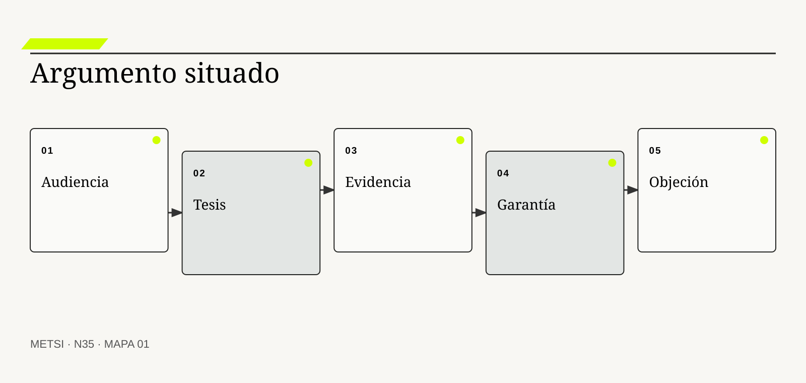
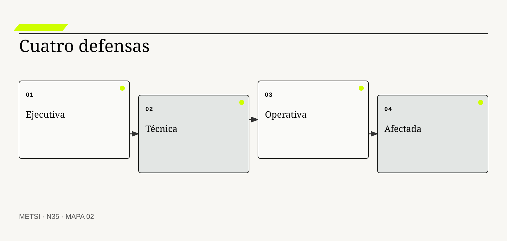
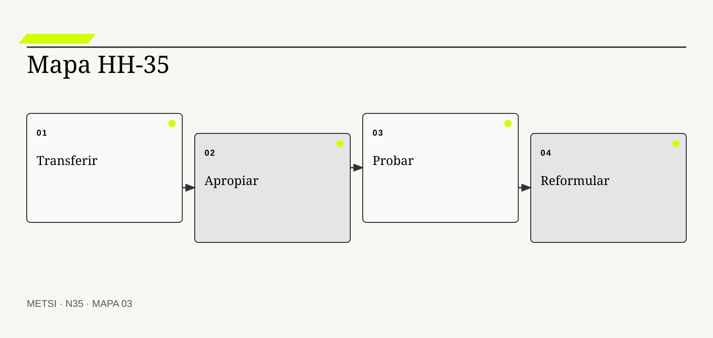

ST
Stephen Toulmin
Ofrece una anatomía práctica de argumentos y refutaciones.

N35 comunica según audiencia, responde objeciones y transfiere criterios sin copiar soluciones ni perder trazabilidad.
Comunicar, defender y transferir criterios sin copiar soluciones
Ruta de lectura: problema, distinciones, decisiones, prueba, transferencia y preparación.
Nota. SIN NUM. identifica aparatos de orientación y referencia.
Seis voces para ampliar, contrastar y discutir N35.
Ofrece una anatomía práctica de argumentos y refutaciones.
Vincula representación visual con integridad de evidencia.

Sitúa la conversación reflexiva dentro de la práctica profesional.

Analiza rutinas defensivas y aprendizaje organizacional.
Concibe comunicación y aprendizaje como diálogo situado.
Explica aprendizaje, participación y comunidades de práctica.
N35 no resume estas fuentes ni las convierte en receta. Las pone en tensión para construir juicio profesional.
¿Cómo lograr que audiencias distintas comprendan, cuestionen y usen una intervención sin reducirla a un relato persuasivo ni copiar su forma?

N35 comunica según audiencia, responde objeciones y transfiere criterios sin copiar soluciones ni perder trazabilidad.
El equipo responsable de la defensa de Hotel Horizonte presenta la intervención con una única secuencia de diapositivas. Dirección escucha demasiado detalle técnico, Tecnología recibe conclusiones sin evidencia y Recepción no encuentra qué debe hacer ante una excepción.
La propuesta era la misma, pero la decisión de cada audiencia era distinta. Comunicar profesionalmente no consiste en simplificar un contenido fijo. Consiste en conservar la cadena de evidencia mientras cambia foco, lenguaje, forma y profundidad.
Defender tampoco significa neutralizar objeciones. Una objeción puede revelar evidencia faltante, una autoridad ausente o un costo desplazado.
El equipo responsable de la defensa diseña cuatro recorridos conectados por el mismo expediente. Cada uno declara decisión solicitada, afirmaciones, fuentes, incertidumbre, consecuencias y próximo paso.
La transferencia se prueba cuando otra persona puede aplicar criterios en un caso nuevo sin copiar la solución del hotel.
N35 recibe de N34 una cadena integrada y la convierte en capacidad de comunicación, defensa, apropiación y transferencia.
HH-35 prepara una defensa ejecutiva, una revisión técnica, un handoff operativo y una explicación accesible para huéspedes afectados. Todas comparten tesis, evidencia y límites. Un registro de objeciones modifica el expediente cuando aparece una explicación rival mejor.
N35 comunica según audiencia, responde objeciones y transfiere criterios sin copiar soluciones ni perder trazabilidad.
N34 deja evidencia y decisiones abiertas que N35 utiliza sin reabrir su contenido. N35 comunica según audiencia, responde objeciones y transfiere criterios sin copiar soluciones ni perder trazabilidad.
N36 utilizará defensa, resultado y sorpresa para construir práctica reflexiva continua. N35 no convierte todavía la experiencia en un sistema personal y colectivo de aprendizaje.
Toulmin, S. estructura afirmación, evidencia, garantía, calificador y refutación. En N35, ese aporte pone a prueba decisiones concretas y no funciona como respaldo ornamental. Su alcance se conserva en N35: ninguna referencia sustituye la evidencia comunicada del caso ni la audiencia decisora necesaria para intervenir.
Tufte, E. R. vincula forma gráfica con densidad e integridad de evidencia. En N35, ese aporte pone a prueba decisiones concretas y no funciona como respaldo ornamental. Su alcance se conserva en N35: ninguna referencia sustituye la evidencia comunicada del caso ni la audiencia decisora necesaria para intervenir.
Schön, D. A. permite tratar la revisión del curso de acción como parte del trabajo profesional. En N35, ese aporte pone a prueba decisiones concretas y no funciona como respaldo ornamental. Su alcance se conserva en N35: ninguna referencia sustituye la evidencia comunicada del caso ni la audiencia decisora necesaria para intervenir.
Argyris, C. aporta una fuente contrastable para definir alcance, evidencia y condiciones de revisión. En N35, ese aporte pone a prueba decisiones concretas y no funciona como respaldo ornamental. Su alcance se conserva en N35: ninguna referencia sustituye la evidencia comunicada del caso ni la audiencia decisora necesaria para intervenir.
Freire, P. aporta una fuente contrastable para definir alcance, evidencia y condiciones de revisión. En N35, ese aporte pone a prueba decisiones concretas y no funciona como respaldo ornamental. Su alcance se conserva en N35: ninguna referencia sustituye la evidencia comunicada del caso ni la audiencia decisora necesaria para intervenir.
Wenger, E. aporta una fuente contrastable para definir alcance, evidencia y condiciones de revisión. En N35, ese aporte pone a prueba decisiones concretas y no funciona como respaldo ornamental. Su alcance se conserva en N35: ninguna referencia sustituye la evidencia comunicada del caso ni la audiencia decisora necesaria para intervenir.
Heath, C. y Heath, D. aportan una fuente contrastable para definir alcance, evidencia y condiciones de revisión. En N35, ese aporte pone a prueba decisiones concretas y no funciona como respaldo ornamental. Su alcance se conserva en N35: ninguna referencia sustituye la evidencia comunicada del caso ni la audiencia decisora necesaria para intervenir.
Norman, D. A. aporta una fuente contrastable para definir alcance, evidencia y condiciones de revisión. En N35, ese aporte pone a prueba decisiones concretas y no funciona como respaldo ornamental. Su alcance se conserva en N35: ninguna referencia sustituye la evidencia comunicada del caso ni la audiencia decisora necesaria para intervenir.
ISO aporta una fuente contrastable para definir alcance, evidencia y condiciones de revisión. En N35, ese aporte pone a prueba decisiones concretas y no funciona como respaldo ornamental. Su alcance se conserva en N35: ninguna referencia sustituye la evidencia comunicada del caso ni la audiencia decisora necesaria para intervenir.
W3C aporta una fuente contrastable para definir alcance, evidencia y condiciones de revisión. En N35, ese aporte pone a prueba decisiones concretas y no funciona como respaldo ornamental. Su alcance se conserva en N35: ninguna referencia sustituye la evidencia comunicada del caso ni la audiencia decisora necesaria para intervenir.
Project Management Institute define éxito como valor suficiente para justificar esfuerzo y gasto. En N35, ese aporte pone a prueba decisiones concretas y no funciona como respaldo ornamental. Su alcance se conserva en N35: ninguna referencia sustituye la evidencia comunicada del caso ni la audiencia decisora necesaria para intervenir.
Checkland, P. y Poulter, J. aportan una fuente contrastable para definir alcance, evidencia y condiciones de revisión. En N35, ese aporte pone a prueba decisiones concretas y no funciona como respaldo ornamental. Su alcance se conserva en N35: ninguna referencia sustituye la evidencia comunicada del caso ni la audiencia decisora necesaria para intervenir.

Una audiencia se define por la decisión que debe tomar, su conocimiento y su exposición. La definición fija el objeto de decisión. Si el equipo de N35 no puede expresar qué compromiso organiza, la categoría funciona como etiqueta y no como instrumento.
No es un segmento demográfico ni un nivel de jerarquía. La distinción evita que una palabra familiar oculte otro mecanismo. En N35, confundirlos cambia qué se observa, qué se acepta como avance y quién debe intervenir.
En audiencia y decisión, el recorrido causal debe mostrar qué condición habilita la acción, qué transformación ocurre y quién absorbe el resultado. Audiencia y decisión se operacionaliza delimitando propósito, población, entradas, autoridad, acción, consecuencia y condición de revisión. El recorrido se contrasta con una alternativa más simple y con un escenario adverso antes de ampliar compromiso. Si un salto depende sólo de una explicación oral, la estrategia todavía no puede gobernarlo.
La evidencia relevante para audiencia y decisión no se limita al resultado promedio. La evidencia integra una prueba previa, resultados desagregados y el episodio siguiente: Dirección decide inversión y Recepción decide contingencia También conserva las decisiones humanas y automáticas que produjeron ese resultado. N35 busca además casos negativos, diferencias entre poblaciones y señales de que la explicación elegida podría ser insuficiente.
Ejemplo. Dirección decide inversión y Recepción decide contingencia En N35, el episodio vuelve visible la relación entre ritmo, autoridad, evidencia y capacidad de reparación.
El tradeoff central de audiencia y decisión aparece entre anticipar y preservar opciones. Anticipar puede reducir coordinación y también fijar una premisa prematura; preservar opciones puede producir aprendizaje y también demorar una protección necesaria. La elección debe declarar cuál de esos costos acepta, durante cuánto tiempo y para quién.
La prueba de apropiación de audiencia y decisión termina con una pregunta de uso: ¿qué podría decidir ahora una persona que antes no podía? En N35, la respuesta debe nombrar una acción, una restricción y una evidencia, no sólo una comprensión mejorada.
Operacionalizar audiencia y decisión requiere asignar una unidad observable. El equipo responsable de la defensa define qué episodio contará, desde qué momento, con qué población y bajo qué fuente. Después compara al menos un caso ordinario con otro que fuerce excepción. Esta precisión en N35 evita que una conclusión general se sostenga sólo en ejemplos convenientes.
La decisión profesional no termina en adoptar audiencia y decisión. Se compara una ruta principal con una explicación rival, se explicita quién queda expuesto y se conserva un modo de revisar. Adaptar no autoriza ocultar consecuencias relevantes. El límite forma parte del diseño y no una nota posterior.
La tesis expresa una afirmación central, su mecanismo y su alcance. Conviene comenzar por su función profesional. Si el equipo de N35 no puede expresar qué compromiso organiza, la categoría funciona como etiqueta y no como instrumento.
No es un eslogan ni una lista de beneficios. El contraste importa porque conduce a pruebas distintas. En N35, confundirlos cambia qué se observa, qué se acepta como avance y quién debe intervenir.
El mecanismo de tesis comunicable no se presume por el nombre. Tesis comunicable se operacionaliza delimitando propósito, población, entradas, autoridad, acción, consecuencia y condición de revisión. El recorrido se contrasta con una alternativa más simple y con un escenario adverso antes de ampliar compromiso. Debe localizarse dónde comienza, qué relaciones activa, qué demora introduce y qué capacidad de reparación queda disponible cuando la expectativa no se cumple.
Una afirmación sobre tesis comunicable gana fuerza cuando puede reconstruirse desde fuentes independientes. La evidencia integra una prueba previa, resultados desagregados y el episodio siguiente: La propuesta conecta menor espera con reglas y reparación También conserva las decisiones humanas y automáticas que produjeron ese resultado. La ausencia de señal también se interpreta: puede significar estabilidad, mala observación o exclusión del caso que más importa.
Ejemplo. La propuesta conecta menor espera con reglas y reparación En N35, el episodio vuelve visible la relación entre ritmo, autoridad, evidencia y capacidad de reparación.
La escala modifica tesis comunicable. Una solución válida para un equipo puede fallar cuando atraviesa sedes, turnos o proveedores porque aumenta la distancia entre señal y autoridad. Antes de ampliar, N35 prueba si la misma decisión conserva significado y reparación bajo esa nueva distribución.
Para evitar consenso aparente, tesis comunicable se revisa con alguien afectado y con alguien responsable de reparar. Las dos perspectivas pueden valorar resultados diferentes y obligan a declarar la prioridad elegida.
En la práctica, tesis comunicable atraviesa más de un área. Se identifican handoffs, esperas, decisiones y datos que cada participante puede ver. Cuando dos áreas usan evidencia distinta en N35, el expediente conserva la divergencia hasta determinar si representa error, perspectiva legítima o una brecha que la estrategia debe resolver.
En una revisión, tesis comunicable debe responder tres preguntas: qué mejora, qué desplaza y qué vuelve más difícil de revertir. Una tesis breve puede seguir siendo falsa o incompleta. Si esas respuestas cambian, también debe cambiar el compromiso, aunque el trabajo previo haya sido técnicamente correcto.
Un argumento conecta una afirmación con evidencia mediante una razón explícita. El concepto adquiere valor cuando cambia una solicitud concreta. Si el equipo de N35 no puede expresar qué compromiso organiza, la categoría funciona como etiqueta y no como instrumento.
La fuente no habla por sí sola ni la audiencia decisora reemplaza la garantía. Su vecino conceptual puede parecer equivalente y no lo es. En N35, confundirlos cambia qué se observa, qué se acepta como avance y quién debe intervenir.
Comprender afirmación, evidencia y garantía exige seguir la decisión en el tiempo. Afirmación, evidencia y garantía se operacionaliza delimitando propósito, población, entradas, autoridad, acción, consecuencia y condición de revisión. El recorrido se contrasta con una alternativa más simple y con un escenario adverso antes de ampliar compromiso. La defensa distingue condición, intervención, señal temprana y consecuencia para evitar atribuir a una práctica un efecto producido por otro cambio simultáneo.
La defensa ante otra audiencia de afirmación, evidencia y garantía debe formularse antes de conocer el resultado. La evidencia integra una prueba previa, resultados desagregados y el episodio siguiente: Un episodio y una traza sostienen la explicación También conserva las decisiones humanas y automáticas que produjeron ese resultado. Se registra qué observación sostendría continuar, cuál obligaría a adaptar y cuál activaría detención o escalamiento.
Ejemplo. Un episodio y una traza sostienen la explicación En N35, el episodio vuelve visible la relación entre ritmo, autoridad, evidencia y capacidad de reparación.
El tiempo también altera afirmación, evidencia y garantía. Una evidencia suficiente para explorar puede ser insuficiente para operar de forma permanente. Por eso se separan prueba local, compromiso transitorio y condición estable, y cada estado conserva fecha, alcance y responsable de revisión.
El registro de afirmación, evidencia y garantía conserva una explicación rival. Si esa alternativa predice mejor el episodio siguiente, el equipo cambia de curso sin reescribir retrospectivamente lo que creía saber.
La gobernanza de afirmación, evidencia y garantía incluye quién puede proponer, aprobar, ejecutar, observar y reparar. Esas funciones no se presumen por cargo ni por permiso técnico. N35 las prueba en un escenario donde falta la persona habitual, porque una capacidad que sólo funciona con conocimiento privado todavía no pertenece a la organización.
El juicio sobre afirmación, evidencia y garantía incluye distribución de consecuencias. La misma evidencia puede admitir interpretaciones rivales. Una mejora agregada no alcanza si concentra espera, riesgo o trabajo invisible en un grupo sin autoridad para discutir la decisión.
La narrativa ejecutiva organiza contexto, decisión, valor, riesgo y compromiso. La definición fija el objeto de decisión. Si el equipo de N35 no puede expresar qué compromiso organiza, la categoría funciona como etiqueta y no como instrumento.
No elimina complejidad ni promete certeza. La distinción evita que una palabra familiar oculte otro mecanismo. En N35, confundirlos cambia qué se observa, qué se acepta como avance y quién debe intervenir.
La explicación operacional de narrativa ejecutiva conecta personas, reglas y tecnología. Narrativa ejecutiva se operacionaliza delimitando propósito, población, entradas, autoridad, acción, consecuencia y condición de revisión. El recorrido se contrasta con una alternativa más simple y con un escenario adverso antes de ampliar compromiso. Esa conexión permite decidir qué parte puede modificarse localmente y cuál requiere coordinación con otras autoridades o capacidades.
Para auditar narrativa ejecutiva, conviene combinar evidencia de diseño, ejecución y consecuencia. La evidencia integra una prueba previa, resultados desagregados y el episodio siguiente: El comité ve alternativas y condición de salida También conserva las decisiones humanas y automáticas que produjeron ese resultado. Ninguna fuente domina automáticamente; una especificación correcta puede convivir con una operación dañina.
Ejemplo. El comité ve alternativas y condición de salida En N35, el episodio vuelve visible la relación entre ritmo, autoridad, evidencia y capacidad de reparación.
Existe además una dimensión política en narrativa ejecutiva. La opción más eficiente puede reducir la capacidad de una persona para cuestionar una solicitud concreta o trasladar trabajo sin reconocerlo. N35 registra esa distribución y no la esconde dentro de un indicador agregado.
Una prueba adversa de narrativa ejecutiva introduce demora, ausencia de autoridad o dato incompleto. El objetivo de N35 no es cubrir todas las fallas, sino revelar si la estrategia mantiene una salida segura fuera del camino ordinario.
El indicador de narrativa ejecutiva se elige después de formular la decisión. Puede combinar tiempo, calidad, distribución y costo de reparación. Una cifra aislada rara vez explica el mecanismo. En N35, la lectura conjunta de señales evita optimizar velocidad mientras aumenta retrabajo, exclusión o dependencia.
La condición de cierre de narrativa ejecutiva no es perfección. Resumir puede silenciar poblaciones o dependencias críticas. Es evidencia suficiente para el uso previsto, riesgo residual aceptado por autoridad y una ruta clara cuando el supuesto deje de cumplirse.

La defensa técnica expone arquitectura, contratos, pruebas, límites y operación. Conviene comenzar por su función profesional. Si el equipo de N35 no puede expresar qué compromiso organiza, la categoría funciona como etiqueta y no como instrumento.
No es una exhibición de herramientas ni cantidad de detalle. El contraste importa porque conduce a pruebas distintas. En N35, confundirlos cambia qué se observa, qué se acepta como avance y quién debe intervenir.
Para que defensa técnica sea algo más que una etiqueta, debe existir una cadena examinable. Defensa técnica se operacionaliza delimitando propósito, población, entradas, autoridad, acción, consecuencia y condición de revisión. El recorrido se contrasta con una alternativa más simple y con un escenario adverso antes de ampliar compromiso. La cadena incluye supuestos, handoffs y efectos laterales que una descripción ideal suele omitir.
El equipo responsable de la defensa no declara resuelto defensa técnica por acuerdo retórico. La evidencia integra una prueba previa, resultados desagregados y el episodio siguiente: Tecnología puede reproducir una prueba adversa También conserva las decisiones humanas y automáticas que produjeron ese resultado. Una persona ajena al diseño debe poder repetir la prueba y comprender por qué el resultado habilita una solicitud concreta concreta.
Ejemplo. Tecnología puede reproducir una prueba adversa En N35, el episodio vuelve visible la relación entre ritmo, autoridad, evidencia y capacidad de reparación.
La mantenibilidad de defensa técnica se prueba mediante cambio deliberado. Se modifica una regla, una fuente o una dependencia y se observa quién detecta el impacto, cuánto tarda en responder y qué información necesita. En N35, si la respuesta depende de memoria privada, la capacidad todavía es frágil.
El costo de defensa técnica se observa tanto en presupuesto como en atención, espera, coordinación y dependencia. Lo que no figura en una factura puede seguir siendo el costo que define la viabilidad.
La transición asociada con defensa técnica necesita un estado intermedio explícito. Durante ese período conviven reglas, versiones o capacidades diferentes. N35 declara cuál rige para cada población, cómo se comunica y qué contingencia protege a quien podría quedar entre ambos sistemas.
La defensa de defensa técnica evita dos extremos: conservar por inercia y cambiar por identidad metodológica. Precisión técnica sin conexión con outcome es insuficiente. Entre ambos queda una solicitud concreta provisional con fecha, responsable y prueba de revisión.
El handoff transfiere capacidad para observar, decidir, actuar y reparar. El concepto adquiere valor cuando cambia una solicitud concreta. Si el equipo de N35 no puede expresar qué compromiso organiza, la categoría funciona como etiqueta y no como instrumento.
No es entregar manuales al final. Su vecino conceptual puede parecer equivalente y no lo es. En N35, confundirlos cambia qué se observa, qué se acepta como avance y quién debe intervenir.
El valor de handoff operativo aparece al contrastar alternativas. Handoff operativo se operacionaliza delimitando propósito, población, entradas, autoridad, acción, consecuencia y condición de revisión. El recorrido se contrasta con una alternativa más simple y con un escenario adverso antes de ampliar compromiso. Si dos opciones producen el mismo entregable inmediato, el mecanismo permite compararlas por aprendizaje, dependencia, riesgo residual y posibilidad de salida.
La suficiencia de evidencia para handoff operativo depende del costo de equivocarse. La evidencia integra una prueba previa, resultados desagregados y el episodio siguiente: El turno nocturno resuelve sin llamar al proyecto También conserva las decisiones humanas y automáticas que produjeron ese resultado. A mayor irreversibilidad o desigualdad de daño, mayor contraste, supervisión y autoridad se requieren.
Ejemplo. El turno nocturno resuelve sin llamar al proyecto En N35, el episodio vuelve visible la relación entre ritmo, autoridad, evidencia y capacidad de reparación.
Finalmente, handoff operativo debe convivir con otras decisiones. Optimizarla de manera aislada puede empeorar flujo, seguridad o comprensión. HH-35 N35 explicita dependencias y evita que una mejora local se presente como outcome completo del sistema.
La revisión de handoff operativo fija fecha y desencadenante. Puede ocurrir por incidente, cambio normativo, nueva población o evidencia acumulada. Sin esa regla en N35, una solicitud concreta provisional se vuelve permanente por olvido.
El cierre de handoff operativo debe sobrevivir a una revisión independiente. La evidencia, las decisiones y los límites se almacenan de manera que otra persona pueda cuestionarlos. En N35, la trazabilidad no busca eliminar desacuerdo; busca que el desacuerdo se concentre en supuestos examinables y no en recuerdos incompatibles.
La comunicación situada debe poder explicar por qué handoff operativo recibe cierta inversión y no otra. La autonomía requiere recursos y autoridad, no sólo conocimiento. Esa explicación conecta valor, costo, aprendizaje y reparación, y permanece abierta a evidencia nueva.
La comunicación afectada explica consecuencia, opciones, revisión y reparación. La definición fija el objeto de decisión. Si el equipo de N35 no puede expresar qué compromiso organiza, la categoría funciona como etiqueta y no como instrumento.
No es marketing ni descargo legal ilegible. La distinción evita que una palabra familiar oculte otro mecanismo. En N35, confundirlos cambia qué se observa, qué se acepta como avance y quién debe intervenir.
En comunicación con personas afectadas, el recorrido causal debe mostrar qué condición habilita la acción, qué transformación ocurre y quién absorbe el resultado. Comunicación con personas afectadas se operacionaliza delimitando propósito, población, entradas, autoridad, acción, consecuencia y condición de revisión. El recorrido se contrasta con una alternativa más simple y con un escenario adverso antes de ampliar compromiso. Si un salto depende sólo de una explicación oral, la estrategia todavía no puede gobernarlo.
La evidencia relevante para comunicación con personas afectadas no se limita al resultado promedio. La evidencia integra una prueba previa, resultados desagregados y el episodio siguiente: El huésped entiende por qué cambió su reserva También conserva las decisiones humanas y automáticas que produjeron ese resultado. N35 busca además casos negativos, diferencias entre poblaciones y señales de que la explicación elegida podría ser insuficiente.
Ejemplo. El huésped entiende por qué cambió su reserva En N35, el episodio vuelve visible la relación entre ritmo, autoridad, evidencia y capacidad de reparación.
El tradeoff central de comunicación con personas afectadas aparece entre anticipar y preservar opciones. Anticipar puede reducir coordinación y también fijar una premisa prematura; preservar opciones puede producir aprendizaje y también demorar una protección necesaria. La elección debe declarar cuál de esos costos acepta, durante cuánto tiempo y para quién.
La prueba de apropiación de comunicación con personas afectadas termina con una pregunta de uso: ¿qué podría decidir ahora una persona que antes no podía? En N35, la respuesta debe nombrar una acción, una restricción y una evidencia, no sólo una comprensión mejorada.
Operacionalizar comunicación con personas afectadas requiere asignar una unidad observable. El equipo responsable de la defensa define qué episodio contará, desde qué momento, con qué población y bajo qué fuente. Después compara al menos un caso ordinario con otro que fuerce excepción. Esta precisión en N35 evita que una conclusión general se sostenga sólo en ejemplos convenientes.
La decisión profesional no termina en adoptar comunicación con personas afectadas. Se compara una ruta principal con una explicación rival, se explicita quién queda expuesto y se conserva un modo de revisar. Transparencia excesivamente técnica también puede ocultar. El límite forma parte del diseño y no una nota posterior.
Una objeción cuestiona afirmación, evidencia, garantía, consecuencia o autoridad. Conviene comenzar por su función profesional. Si el equipo de N35 no puede expresar qué compromiso organiza, la categoría funciona como etiqueta y no como instrumento.
No es resistencia que deba vencerse. El contraste importa porque conduce a pruebas distintas. En N35, confundirlos cambia qué se observa, qué se acepta como avance y quién debe intervenir.
El mecanismo de objeción no se presume por el nombre. Objeción se operacionaliza delimitando propósito, población, entradas, autoridad, acción, consecuencia y condición de revisión. El recorrido se contrasta con una alternativa más simple y con un escenario adverso antes de ampliar compromiso. Debe localizarse dónde comienza, qué relaciones activa, qué demora introduce y qué capacidad de reparación queda disponible cuando la expectativa no se cumple.
Una afirmación sobre objeción gana fuerza cuando puede reconstruirse desde fuentes independientes. La evidencia integra una prueba previa, resultados desagregados y el episodio siguiente: Operaciones muestra que la contingencia no funciona bajo carga También conserva las decisiones humanas y automáticas que produjeron ese resultado. La ausencia de señal también se interpreta: puede significar estabilidad, mala observación o exclusión del caso que más importa.
Ejemplo. Operaciones muestra que la contingencia no funciona bajo carga En N35, el episodio vuelve visible la relación entre ritmo, autoridad, evidencia y capacidad de reparación.
La escala modifica objeción. Una solución válida para un equipo puede fallar cuando atraviesa sedes, turnos o proveedores porque aumenta la distancia entre señal y autoridad. Antes de ampliar, N35 prueba si la misma decisión conserva significado y reparación bajo esa nueva distribución.
Para evitar consenso aparente, objeción se revisa con alguien afectado y con alguien responsable de reparar. Las dos perspectivas pueden valorar resultados diferentes y obligan a declarar la prioridad elegida.
En la práctica, objeción atraviesa más de un área. Se identifican handoffs, esperas, decisiones y datos que cada participante puede ver. Cuando dos áreas usan evidencia distinta en N35, el expediente conserva la divergencia hasta determinar si representa error, perspectiva legítima o una brecha que la estrategia debe resolver.
En una revisión, objeción debe responder tres preguntas: qué mejora, qué desplaza y qué vuelve más difícil de revertir. No toda objeción tiene el mismo respaldo y debe evaluarse. Si esas respuestas cambian, también debe cambiar el compromiso, aunque el trabajo previo haya sido técnicamente correcto.

Comunicar incertidumbre distingue desconocimiento, variabilidad y desacuerdo. El concepto adquiere valor cuando cambia una solicitud concreta. Si el equipo de N35 no puede expresar qué compromiso organiza, la categoría funciona como etiqueta y no como instrumento.
No es debilitar una propuesta ni agregar una advertencia genérica. Su vecino conceptual puede parecer equivalente y no lo es. En N35, confundirlos cambia qué se observa, qué se acepta como avance y quién debe intervenir.
Comprender incertidumbre comunicada exige seguir la decisión en el tiempo. Incertidumbre comunicada se operacionaliza delimitando propósito, población, entradas, autoridad, acción, consecuencia y condición de revisión. El recorrido se contrasta con una alternativa más simple y con un escenario adverso antes de ampliar compromiso. La defensa distingue condición, intervención, señal temprana y consecuencia para evitar atribuir a una práctica un efecto producido por otro cambio simultáneo.
La defensa ante otra audiencia de incertidumbre comunicada debe formularse antes de conocer el resultado. La evidencia integra una prueba previa, resultados desagregados y el episodio siguiente: Se declara qué dato cambiaría la recomendación También conserva las decisiones humanas y automáticas que produjeron ese resultado. Se registra qué observación sostendría continuar, cuál obligaría a adaptar y cuál activaría detención o escalamiento.
Ejemplo. Se declara qué dato cambiaría la recomendación En N35, el episodio vuelve visible la relación entre ritmo, autoridad, evidencia y capacidad de reparación.
El tiempo también altera incertidumbre comunicada. Una evidencia suficiente para explorar puede ser insuficiente para operar de forma permanente. Por eso se separan prueba local, compromiso transitorio y condición estable, y cada estado conserva fecha, alcance y responsable de revisión.
El registro de incertidumbre comunicada conserva una explicación rival. Si esa alternativa predice mejor el episodio siguiente, el equipo cambia de curso sin reescribir retrospectivamente lo que creía saber.
La gobernanza de incertidumbre comunicada incluye quién puede proponer, aprobar, ejecutar, observar y reparar. Esas funciones no se presumen por cargo ni por permiso técnico. N35 las prueba en un escenario donde falta la persona habitual, porque una capacidad que sólo funciona con conocimiento privado todavía no pertenece a la organización.
El juicio sobre incertidumbre comunicada incluye distribución de consecuencias. Ocultar incertidumbre produce confianza frágil; exagerarla impide decidir. Una mejora agregada no alcanza si concentra espera, riesgo o trabajo invisible en un grupo sin autoridad para discutir la decisión.
La evidencia visual organiza relaciones, cantidades o secuencias que necesitan verse. La definición fija el objeto de decisión. Si el equipo de N35 no puede expresar qué compromiso organiza, la categoría funciona como etiqueta y no como instrumento.
No es decoración ni sustituto de explicación. La distinción evita que una palabra familiar oculte otro mecanismo. En N35, confundirlos cambia qué se observa, qué se acepta como avance y quién debe intervenir.
La explicación operacional de evidencia visual conecta personas, reglas y tecnología. Evidencia visual se operacionaliza delimitando propósito, población, entradas, autoridad, acción, consecuencia y condición de revisión. El recorrido se contrasta con una alternativa más simple y con un escenario adverso antes de ampliar compromiso. Esa conexión permite decidir qué parte puede modificarse localmente y cuál requiere coordinación con otras autoridades o capacidades.
Para auditar evidencia visual, conviene combinar evidencia de diseño, ejecución y consecuencia. La evidencia integra una prueba previa, resultados desagregados y el episodio siguiente: Un mapa conecta actores, estados y reparación También conserva las decisiones humanas y automáticas que produjeron ese resultado. Ninguna fuente domina automáticamente; una especificación correcta puede convivir con una operación dañina.
Ejemplo. Un mapa conecta actores, estados y reparación En N35, el episodio vuelve visible la relación entre ritmo, autoridad, evidencia y capacidad de reparación.
Existe además una dimensión política en evidencia visual. La opción más eficiente puede reducir la capacidad de una persona para cuestionar una solicitud concreta o trasladar trabajo sin reconocerlo. N35 registra esa distribución y no la esconde dentro de un indicador agregado.
Una prueba adversa de evidencia visual introduce demora, ausencia de autoridad o dato incompleto. El objetivo de N35 no es cubrir todas las fallas, sino revelar si la estrategia mantiene una salida segura fuera del camino ordinario.
El indicador de evidencia visual se elige después de formular la decisión. Puede combinar tiempo, calidad, distribución y costo de reparación. Una cifra aislada rara vez explica el mecanismo. En N35, la lectura conjunta de señales evita optimizar velocidad mientras aumenta retrabajo, exclusión o dependencia.
La condición de cierre de evidencia visual no es perfección. Un gráfico puede naturalizar escalas, omisiones o causalidades falsas. Es evidencia suficiente para el uso previsto, riesgo residual aceptado por autoridad y una ruta clara cuando el supuesto deje de cumplirse.
La transferencia conserva preguntas, mecanismos y límites al cambiar contexto. Conviene comenzar por su función profesional. Si el equipo de N35 no puede expresar qué compromiso organiza, la categoría funciona como etiqueta y no como instrumento.
No copia soluciones, roles ni métricas del caso original. El contraste importa porque conduce a pruebas distintas. En N35, confundirlos cambia qué se observa, qué se acepta como avance y quién debe intervenir.
Para que transferencia por criterios sea algo más que una etiqueta, debe existir una cadena examinable. Transferencia por criterios se operacionaliza delimitando propósito, población, entradas, autoridad, acción, consecuencia y condición de revisión. El recorrido se contrasta con una alternativa más simple y con un escenario adverso antes de ampliar compromiso. La cadena incluye supuestos, handoffs y efectos laterales que una descripción ideal suele omitir.
El equipo responsable de la defensa no declara resuelto transferencia por criterios por acuerdo retórico. La evidencia integra una prueba previa, resultados desagregados y el episodio siguiente: Otro hotel usa criterios y diseña una contingencia distinta También conserva las decisiones humanas y automáticas que produjeron ese resultado. Una persona ajena al diseño debe poder repetir la prueba y comprender por qué el resultado habilita una solicitud concreta concreta.
Ejemplo. Otro hotel usa criterios y diseña una contingencia distinta En N35, el episodio vuelve visible la relación entre ritmo, autoridad, evidencia y capacidad de reparación.
La mantenibilidad de transferencia por criterios se prueba mediante cambio deliberado. Se modifica una regla, una fuente o una dependencia y se observa quién detecta el impacto, cuánto tarda en responder y qué información necesita. En N35, si la respuesta depende de memoria privada, la capacidad todavía es frágil.
El costo de transferencia por criterios se observa tanto en presupuesto como en atención, espera, coordinación y dependencia. Lo que no figura en una factura puede seguir siendo el costo que define la viabilidad.
La transición asociada con transferencia por criterios necesita un estado intermedio explícito. Durante ese período conviven reglas, versiones o capacidades diferentes. N35 declara cuál rige para cada población, cómo se comunica y qué contingencia protege a quien podría quedar entre ambos sistemas.
La defensa de transferencia por criterios evita dos extremos: conservar por inercia y cambiar por identidad metodológica. Abstraer demasiado produce consejos genéricos sin poder de decisión. Entre ambos queda una solicitud concreta provisional con fecha, responsable y prueba de revisión.
Teach back verifica apropiación pidiendo reconstruir y usar el criterio. El concepto adquiere valor cuando cambia una solicitud concreta. Si el equipo de N35 no puede expresar qué compromiso organiza, la categoría funciona como etiqueta y no como instrumento.
No es repetir una definición ni aprobar una exposición. Su vecino conceptual puede parecer equivalente y no lo es. En N35, confundirlos cambia qué se observa, qué se acepta como avance y quién debe intervenir.
El valor de teach back aparece al contrastar alternativas. Teach back se operacionaliza delimitando propósito, población, entradas, autoridad, acción, consecuencia y condición de revisión. El recorrido se contrasta con una alternativa más simple y con un escenario adverso antes de ampliar compromiso. Si dos opciones producen el mismo entregable inmediato, el mecanismo permite compararlas por aprendizaje, dependencia, riesgo residual y posibilidad de salida.
La suficiencia de evidencia para teach back depende del costo de equivocarse. La evidencia integra una prueba previa, resultados desagregados y el episodio siguiente: Un equipo nuevo explica cuándo no usar el agente También conserva las decisiones humanas y automáticas que produjeron ese resultado. A mayor irreversibilidad o desigualdad de daño, mayor contraste, supervisión y autoridad se requieren.
Ejemplo. Un equipo nuevo explica cuándo no usar el agente En N35, el episodio vuelve visible la relación entre ritmo, autoridad, evidencia y capacidad de reparación.
Finalmente, teach back debe convivir con otras decisiones. Optimizarla de manera aislada puede empeorar flujo, seguridad o comprensión. HH-35 N35 explicita dependencias y evita que una mejora local se presente como outcome completo del sistema.
La revisión de teach back fija fecha y desencadenante. Puede ocurrir por incidente, cambio normativo, nueva población o evidencia acumulada. Sin esa regla en N35, una solicitud concreta provisional se vuelve permanente por olvido.
El cierre de teach back debe sobrevivir a una revisión independiente. La evidencia, las decisiones y los límites se almacenan de manera que otra persona pueda cuestionarlos. En N35, la trazabilidad no busca eliminar desacuerdo; busca que el desacuerdo se concentre en supuestos examinables y no en recuerdos incompatibles.
La comunicación situada debe poder explicar por qué teach back recibe cierta inversión y no otra. Una buena explicación no garantiza capacidad bajo presión y necesita práctica. Esa explicación conecta valor, costo, aprendizaje y reparación, y permanece abierta a evidencia nueva.
El instrumento organiza una solicitud concreta concreta y no una descripción total. Cada campo debe completarse con evidencia disponible, incertidumbre explícita y autoridad identificada. Si un campo todavía no puede responderse, se registra como asunto abierto y no se completa por inferencia.
HH-35 se prueba con un escenario ordinario y uno adverso. Una persona que no participó en su construcción debe poder reconstruir qué se decidió, por qué, qué permanece incierto y cuál es la próxima puerta. El cierre no exige certeza total; exige incertidumbre gobernada y una salida practicable.
Un hospital recibe el expediente del Hotel Horizonte y no copia su agente ni sus métricas. Utiliza criterios de tarea, severidad, supervisión y reparación para evaluar apoyo a la guardia.
La defensa se adapta a conducción clínica, tecnología, profesionales y pacientes, pero conserva fuentes, límites y autoridad.
La transferencia ocurre cuando el nuevo equipo produce una solución diferente con una cadena de juicio reconocible.
Una consultora replica la presentación del hotel, cambia nombres y conserva la misma secuencia de solución.
El contexto tiene otra población, autoridad y daño. La forma viaja, pero el criterio no.
Transferir exige reconstruir el problema con las preguntas aprendidas y aceptar que la respuesta cambie.
La defensa ante otra audiencia integral de comunicar, defender y transferir criterios sin copiar soluciones toma una solicitud concreta real y la recorre desde su origen hasta una consecuencia observable. Utiliza audiencia, decisión, tesis, evidencia para evitar que el análisis quede dividido en artefactos independientes. Cada afirmación debe encontrar una fuente, una autoridad y una condición de revisión. Cuando dos registros no coinciden, la diferencia se conserva como hallazgo hasta explicar su mecanismo.
El escenario ordinario verifica que n35 comunica según audiencia, responde objeciones y transfiere criterios sin copiar soluciones ni perder trazabilidad. El escenario adverso modifica una dependencia, introduce demora y deja ausente a la persona que suele resolver. El equipo responsable de la defensa observa si la estrategia detecta el cambio, limita el daño, comunica incertidumbre y activa reparación sin recurrir a conocimiento privado.
La comparación incluye una alternativa descartada. Se documenta por qué no fue elegida, qué supuesto la volvería preferible y qué costo tendría recuperarla. Este ejercicio protege opciones futuras y evita presentar la decisión actual como única solución técnicamente posible. También vuelve discutibles los costos hundidos cuando aparece evidencia nueva.
La defensa ante otra audiencia concluye con una defensa breve ante una audiencia ajena al equipo. Esa audiencia debe poder reconstruir el problema, objetar la evidencia comunicada y comprender por qué la salida propuesta es proporcional. Si sólo puede repetir la recomendación, el expediente todavía no sostiene una solicitud concreta profesional. Si puede reconocer límites y actuar ante una excepción, existe capacidad transferible.
Usar una presentación para todos simplifica una solicitud concreta que depende de propósito, evidencia y consecuencia. La velocidad inicial se paga cuando operación descubre el supuesto omitido. La reformulación comunicacional vuelve al episodio, identifica quién absorbe el costo y define una prueba antes de continuar.
Confundir brevedad con claridad parece reducir coordinación, pero confunde acuerdo con conocimiento suficiente. El equipo responsable de la defensa debe comparar una explicación rival, localizar autoridad y registrar qué señal cambiaría el curso elegido.
Citar sin garantía desplaza incertidumbre hacia personas que no participaron de la elección. Corregirlo exige reconstruir el mecanismo, hacer visible el trabajo añadido y establecer una condición de salida proporcional al daño posible.
Vender certeza convierte una práctica en fin. La revisión pregunta qué función debía cumplir, qué evidencia produjo y por qué sigue siendo necesaria. Si la función desapareció, la práctica se adapta o se retira.
Mostrar detalle sin decisión oculta una frontera. El artefacto puede cerrar y la capacidad seguir incompleta. Un escenario adverso permite observar handoffs, excepciones y reparación antes de ampliar compromiso.
Entregar manuales sin práctica confunde cumplimiento formal con decisión defendible. Se necesita conectar fuente, interpretación, implementación y efecto, incluyendo la audiencia decisora que acepta el riesgo residual.
Hablar por personas afectadas suele premiar lo visible y dejar fuera mantenimiento, soporte y aprendizaje. La reformulación comunicacional compara el ciclo completo, documenta dependencia y ensaya una salida real.
Tratar objeción como resistencia reduce diversidad de casos a un promedio conveniente. Se revisan poblaciones, extremos y daños asimétricos para evitar que una mejora global silencie una pérdida crítica.
Ocultar incertidumbre borra memoria y vuelve inexplicable el cambio de rumbo. Una baseline y un registro breve permiten conservar razones sin inmovilizar la estrategia.
Decorar con gráficos deja responsabilidad sin capacidad. El diseño debe unir permiso, recursos, evidencia y posibilidad de reparar; nombrar un dueño no crea por sí mismo una función operativa.
Copiar soluciones simplifica una solicitud concreta que depende de propósito, evidencia y consecuencia. La velocidad inicial se paga cuando operación descubre el supuesto omitido. La reformulación comunicacional vuelve al episodio, identifica quién absorbe el costo y define una prueba antes de continuar.
Evaluar por repetición parece reducir coordinación, pero confunde acuerdo con conocimiento suficiente. El equipo responsable de la defensa debe comparar una explicación rival, localizar autoridad y registrar qué señal cambiaría el curso elegido.
N35 comunica según audiencia, responde objeciones y transfiere criterios sin copiar soluciones ni perder trazabilidad. La competencia profesional aparece cuando la elección conserva trazabilidad, expone sus límites y puede ser discutida por quienes deciden, operan y reciben sus consecuencias.

Ningún modelo, expediente o marco elimina incertidumbre, conflicto ni asimetrías de poder.
Ningún modelo, expediente o marco elimina incertidumbre, conflicto ni asimetrías de poder. La evidencia disponible puede ser incompleta, los incentivos pueden desplazar daño y la audiencia decisora formal puede carecer de capacidad real. La lectura exige declarar esas restricciones, limitar exposición, preservar reparación y fijar una revisión verificable.
N36 utilizará defensa, resultado y sorpresa para construir práctica reflexiva continua. N35 no convierte todavía la experiencia en un sistema personal y colectivo de aprendizaje.
N35 comunica según audiencia, responde objeciones y transfiere criterios sin copiar soluciones ni perder trazabilidad.
El bloque no propone reemplazar una doctrina por otra. Propone hacer visibles las decisiones que cada práctica organiza, la evidencia comunicada que necesita y los daños que puede producir. El resultado es una intervención que puede explicarse, probarse y revisarse.
Audiencia y decisión: una audiencia se define por la decisión que debe tomar, su conocimiento y su exposición.
Tesis comunicable: la tesis expresa una afirmación central, su mecanismo y su alcance.
Afirmación, evidencia y garantía: un argumento conecta una afirmación con evidencia mediante una razón explícita.
Narrativa ejecutiva: la narrativa ejecutiva organiza contexto, decisión, valor, riesgo y compromiso.
Defensa técnica: la defensa técnica expone arquitectura, contratos, pruebas, límites y operación.
Handoff operativo: el handoff transfiere capacidad para observar, decidir, actuar y reparar.
Comunicación con personas afectadas: la comunicación afectada explica consecuencia, opciones, revisión y reparación.
Objeción: una objeción cuestiona afirmación, evidencia, garantía, consecuencia o autoridad.
Incertidumbre comunicada: comunicar incertidumbre distingue desconocimiento, variabilidad y desacuerdo.
Evidencia visual: la evidencia comunicada visual organiza relaciones, cantidades o secuencias que necesitan verse.
Transferencia por criterios: la transferencia conserva preguntas, mecanismos y límites al cambiar contexto.
Teach back: teach back verifica apropiación pidiendo reconstruir y usar el criterio.
Para el encuentro, seleccionar una intervención conocida, completar el instrumento con evidencia verificable y preparar una solicitud concreta provisional. Incluir una explicación rival, una condición que obligaría a revisar y una consecuencia para una persona afectada.